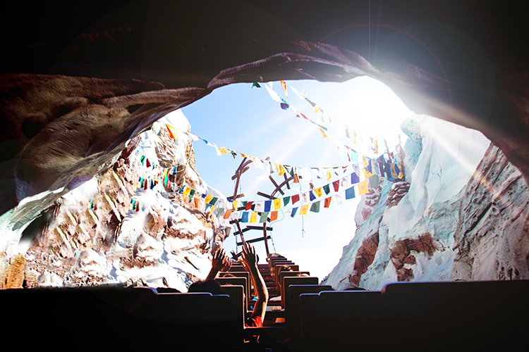
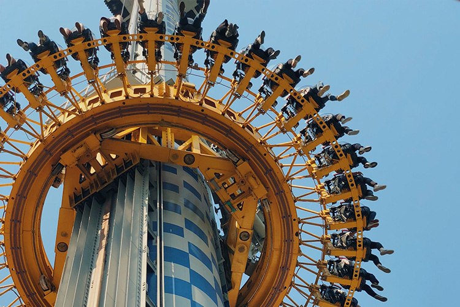
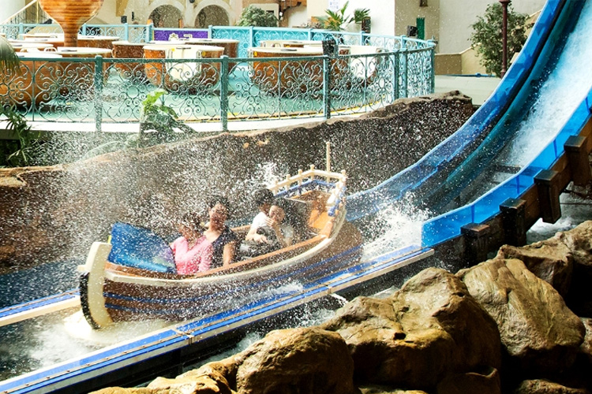
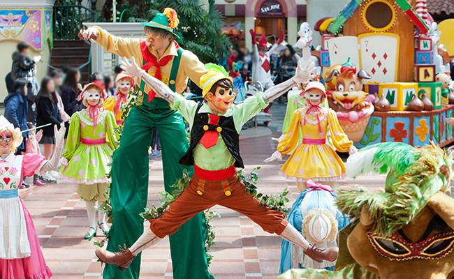
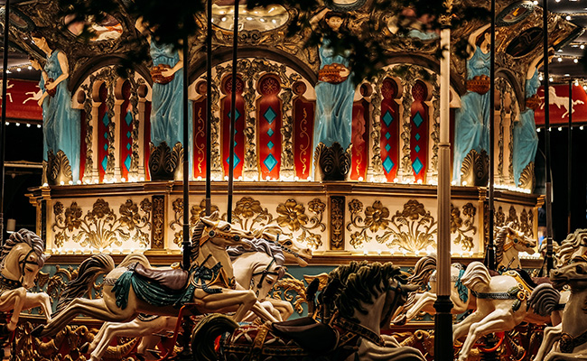
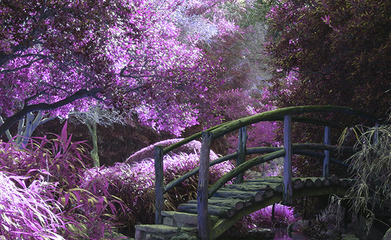

> 테마파크 > 롯데월드
롯데월드
언제나 새롭고 즐거운 경험을 주는 롯데월드를 소개합니다!
Attraction
-

- 롤러코스터
- 시속 104km의 엄청난 속도, 낙하각 77도의 아찔함! 세계 최고의 우든코스터가 잊지 못 할 최고의 기억을 여러분께 선사합니다.
- -모든 소지품은 반드시 소지품 보관함에 넣고 탑승합니다. -부상 예방을 위해 탑승 전 스트레칭은 필수입니다. 바로가기
- 
- 자이로드롭
- 미국 서부 시대 한 마을을 덮친 자이로드롭... 오늘 초대형 폭풍 자이로드롭과 함께 하나가 된다! 19미터 높이에서 회전하는 메가톤급 회오리 속에 몸을 맡겨 보는거야!!
- -어트랙션 운영 중 안전센서 작동, 낙뢰, 정전, 기상 조건으로 인해 비상정지할 수 있으며, 시설물 긴급 점검이 필요할 경우 사전 예고없이 운영이 중단될 수 있습니다. 바로가기
- 
- 아트란티스
- 많은 탐험가들이 호수 속에 잠들어 있는 황금을 차지하기 위해 보트 위에 몸을 맡겼다! 장장 580미터 굽이치는 급류 속으로 꿈과 모험을 찾아 떠나는 곳!
- -어트랙션 운영 중 안전센서 작동, 낙뢰, 정전, 기상 조건으로 인해 비상정지할 수 있으며, 시설물 긴급 점검이 필요할 경우 사전 예고없이 운영이 중단될 수 있습니다. 바로가기
Parade
-

- 가면무도회
- 마스크 조각상들의 마임 퍼포먼스와 신비로운 가면무도회에 여러분을 초대합니다.
- 장소
- 매직아일랜드 백설공주의 성/회전그네 앞 * 주말 및 공휴일 운영
- 
- 매직캐슬 라이츠업
- 국내 최고의 영상 기술과 사운드 시스템, 거기에 화려한 불꽃 레이저쇼에 감각적인 특수효과까지!
- 장소
- 실내 놀이기구 회전목마 앞
- 
- 미라클 나이트
- 어드벤처 비밀 공간 '미라클 월'에 숨겨진 5개의 미라클 스톤을 찾아 떠나는 모험!
- 장소
- 실내 놀이기구 바이킹 앞